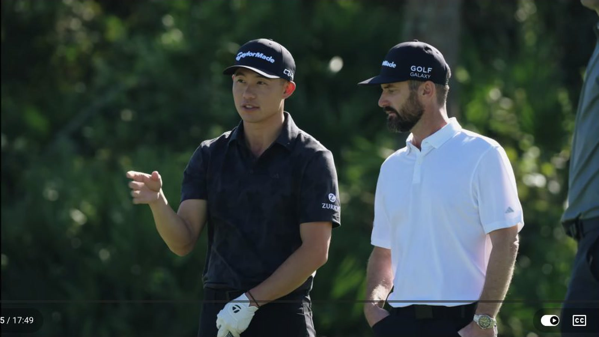
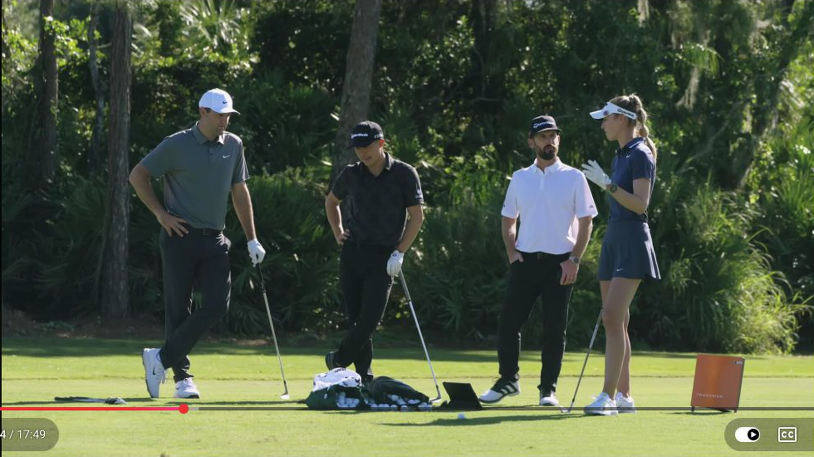
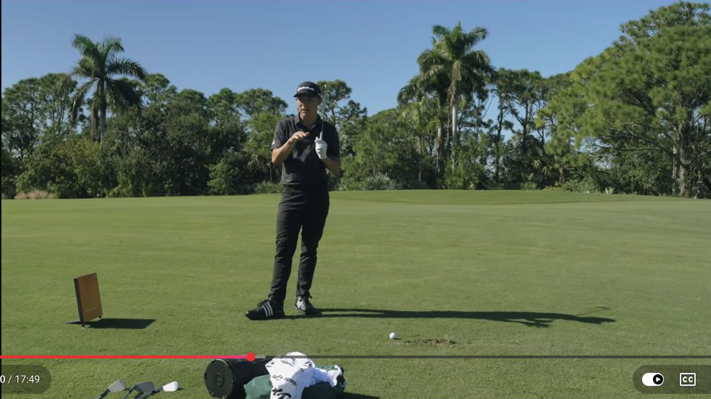
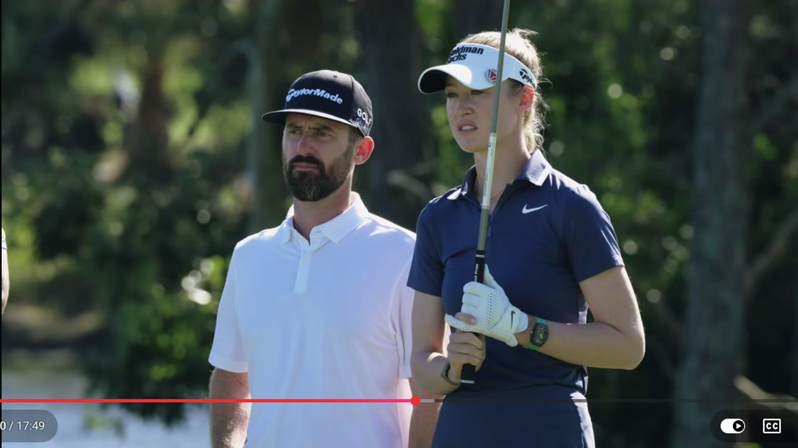
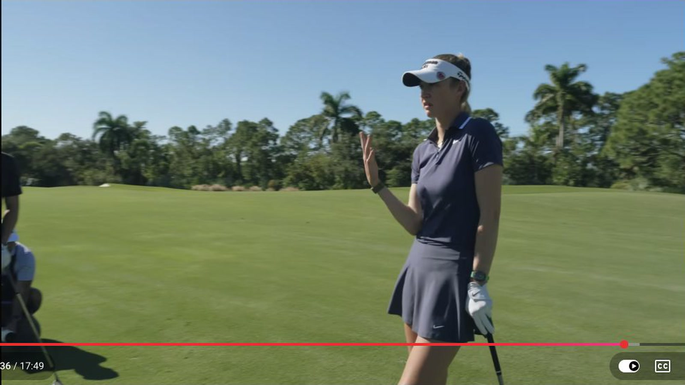

Executive summary
The pros are usually trying to remove spin, not create more of it
A flighted wedge launches lower, stays below more of the wind, and tends to produce a more repeatable spin window. The common recipe is more club and less speed. The player makes a smooth, partial motion rather than forcing a shorter, higher-lofted wedge to travel near its maximum distance.
That recipe changes when the landing problem changes. A front pin on firm turf may need height and extra spin, so Nelly chooses a fuller shot. A back pin can punish a full wedge that spins down a slope, so Scottie and Collin take more club and remove speed. The technique follows the desired behavior on the green.
Evidence boundary. The stated yardages and feels belong to these three players on this lie, wind, and green. The useful lesson is the decision sequence. Your carry numbers, spin, turf interaction, and safest miss must be measured with your own wedges.
What flighted means
Lower launch is useful because it makes distance easier to predict
Collin defines a flighted wedge as a flatter flight that does not climb into a large arc. It stays under the wind and gives the player a more consistent relationship among launch, contact, spin, and carry. The objective is distance control, not a low shot for its own sake.
Scottie adds the green-side reason. Players are often trying to take spin off fuller wedge shots. Excess spin can pull a good-looking ball away from a back pin. Club selection therefore starts with what the ball should do after landing, then works backward to loft and swing length.

Three player systems
They share the same physics but organize feel differently
| Player | Club choice | Primary feel | Target process | Pressure preference | Time |
|---|---|---|---|---|---|
| Scottie Scheffler | Uses more club when a full 56° would launch higher and spin more. Selects a 50° for the 106-yard back pin. | Builds calibrated distance feels in practice, then looks at the pin and reacts once comfortable. | Accounts for bunker carry, slope, lie, and the side that turns aggression into bogey. | Can shape both ways, but still chooses the shot that fits the day's feel and percentage play. | 1:23 |
| Collin Morikawa | His 50° stock shot is 128 yards. He chokes down and uses it smoothly for the shorter flighted number. | More club, less speed, slightly back ball position when he wants the flight especially low, hands forward, body stays over the ball. | Matches the curve and flight he sees with a feel in his hands. Curve also changes expected distance. | Under pressure he favors a cut because he knows the ball will not miss left. | 6:34 |
| Nelly Korda | Rarely hits a full wedge. For the 106-yard shot she clubs up to pitching wedge; for the 67-yard front pin she allows a fuller, higher shot. | Uses feel, preferred draw, and a target beyond the pin. She lets the slope move the ball rather than staring only at the flag. | Aims at a small group of trees, trusts a baby draw, and lets the left-to-right slope contribute. | Relies on the draw because it gives her one predictable side of the course. | 4:52 |
Case one · 106-yard back pin
Work backward from the spin you can afford
The shot plays closer to 110 or 115 yards because of the breeze. Scottie could hit a fuller 56°, but that ball would launch higher and spin more. He selects a 50° because its lower, slower delivery needs less wind allowance and is less likely to pull away from the back section.
Nelly reaches a similar solution through her own pattern. She takes pitching wedge, aims beyond the flag at three trees, and tries to hit a straight ball or baby draw. The ball is below her feet and the ground moves left to right, so the external target keeps her intention stable while the lie and slope shape the result.

The bunker changes the target. A wedge invites aggression, but the bunker carry and left-side miss still matter. The group repeatedly distinguishes a good aggressive line from a flag hunt that turns a short approach into bogey.
Spin control
More club reduces the speed that creates excess spin
Collin states the mechanism plainly: speed creates spin. Trying to force a 60° wedge to travel farther requires speed and usually raises both launch and spin. Taking more club lets the player swing more smoothly. Everything comes down together.
For an especially low flight, Collin can move the ball back, lean the handle forward, and stay over the ball. He does not present this as a rigid checkpoint for every flighted wedge. The main control is effort. Ball position and handle condition refine the window when the shot needs to come out lower.

Case two · 67-yard front pin
The correct response is sometimes the opposite of a flighted wedge
Nelly immediately rejects the flighted option for the front pin. She wants a ball that lands softly and can pull back rather than one that lands low, jumps forward, and stops after passing the target. The 67-yard number plays into the mid or high 70s because of the wind.
Scottie describes two available windows. He can hit a lower shot that behaves like a low-70s carry, or use the headwind and send a higher shot close to 80 yards so it returns with more spin. The flag position determines whether extra spin is protection or punishment.

Back pin
Prefer a lower, lower-spin window when a full wedge could land near the flag and pull too far back.
Front pin
Prefer height and spin when a low shot may release beyond the small landing area before stopping.
Helping wind
Expect curve and launch to change carry. A lower shot may arrive too flat if the wind keeps pushing it forward.
Headwind
Choose whether to stay below it for predictable carry or use it to add height and stopping power.
Measured feel
Feel becomes reliable only after the distances have been trained
Scottie practices explicit yardages until a 110-yard motion has a recognizable feel. On the course he checks that the setup feels comfortable, then shifts attention to the pin. The final swing looks instinctive because the number was trained beforehand.
None of the three relies on a visible clock-face system in this conversation. Their motion appears feel-based, but the feel contains stored information about club, swing length, contact, launch, curve, and carry. Calling it feel does not mean guessing.
Inside 100 yards, Scottie says the expectation is to create a putt inside ten feet. The players also say they spend substantial practice time on this range because wedge confidence reduces pressure after a missed fairway, a layup, or a difficult major-championship approach.
Shape and pressure
The best tournament shot is the one with a known miss
Nelly uses a draw under pressure because the pattern is consistent and removes one side. Collin prefers a cut when the stakes rise because he trusts that it will not go left. Scottie is comfortable matching more shapes to the pin, but even he adjusts the plan when the body or hands feel different that day.
The players agree on the percentage logic. More shot shapes can improve access to pins, but each added shape can introduce another miss. A recreational golfer gains more from one predictable stock pattern than from two curves that cannot be separated under pressure.

Practice sequence
Build a wedge matrix around landing behavior
- Measure stock carry first. Record clean carry for every wedge at comfortable full effort. Without this baseline, a partial-shot feel has no reference.
- Add one smooth flighted number per club. Choke down, reduce speed, and record launch, carry, strike, and rollout. Do not force the ball low with a violent handle action.
- Alternate front and back pins. Decide before swinging whether the landing ball should release, stop, or pull back. Choose club and trajectory from that answer.
- Change wind and slope. Include ball-below-feet lies and bunker carries. Pick an external target, then verify whether the resulting miss remains playable.
- Finish with pressure calls. Name a yardage, pin depth, and safe side. Hit one ball only. Keep the curve that gives you the clearest one-sided miss.
My take
The secret is choosing the landing reaction before choosing the swing
The video title promises perfect wedge play, but the session shows something more useful than a perfect technique. Every technical choice is downstream of a landing decision. More club and less speed work because the back pin needs lower spin. A fuller, higher shot works because the front pin needs the ball to stop sooner.
This also explains why copying a professional's ball position can fail. The visible position is one answer to one landing problem. The durable skill is learning to predict carry, curve, spin, and miss well enough to select the answer yourself.
Sources and method
What this article is based on
- TaylorMade Golf Canada · The Secret to Perfect Wedge Play. Primary source for all yardages, club choices, techniques, and player comments.
Method: 591 public English-caption rows were reviewed across the full 17:49 video. Six direct frames were captured from the source at 1600x900. The video promotes TaylorMade Milled Grind 4 wedges, but this article focuses on the players' decision process rather than product claims.